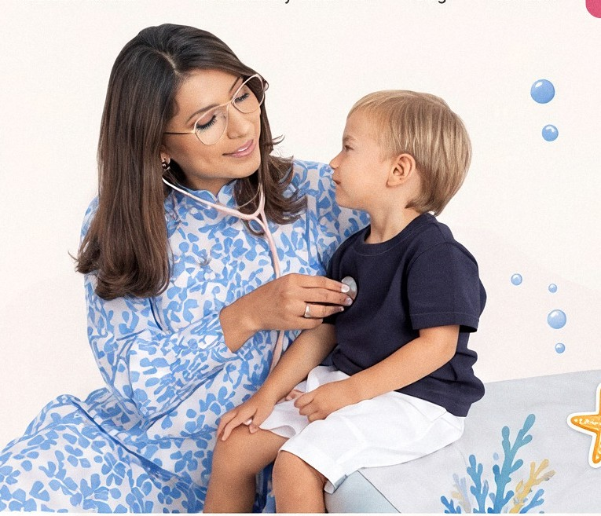
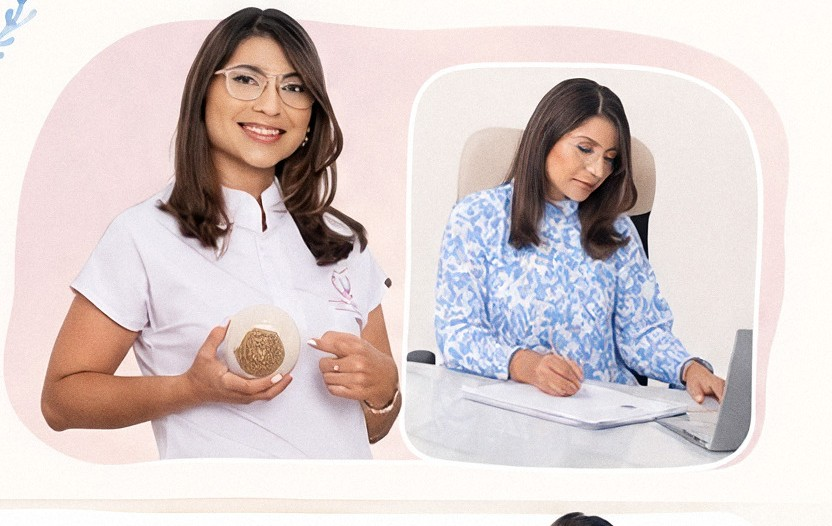
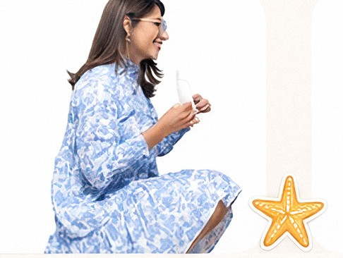
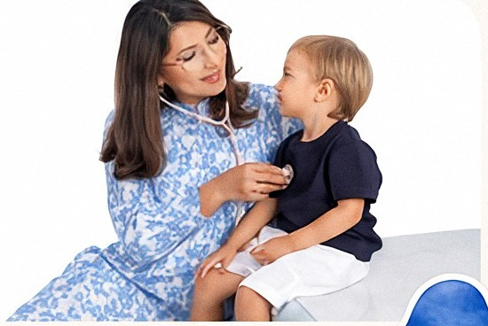
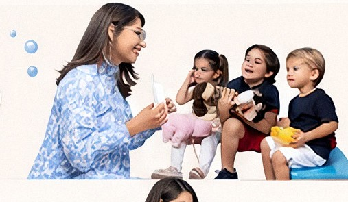

cuidamos la salud
y nutrición de tus pequeños
Acompañamos cada etapa de su crecimiento con cariño, ciencia y dedicación.

¿cómo podemos ayudarte?
Servicios pensados para el bienestar integral de tus hijos.
valoración nutricional
crecimiento y desarrollo
alimentación complementaria
asesoría a padres
educación en salud

conoce a la doctora
Soy la Dra. Dalila Peñaranda, pediatra y especialista en nutrición infantil. Mi misión es acompañar a tu familia con un enfoque cálido, humano y basado en evidencia, promoviendo la salud y el desarrollo óptimo de cada niño.
Atención cercana
Escucho, entiendo y acompaño a cada familia.
Experiencia y formación
Pediatra con enfoque en nutrición infantil.
Compromiso integral
Cuidado personalizado en cada etapa del crecimiento.
nutrición infantil
Promovemos hábitos alimentarios saludables desde los primeros años.
- Valoración nutricional personalizada
- Asesoría en alimentación complementaria
- Manejo de selectividad alimentaria
- Planes de alimentación saludables

pediatría
Cuidamos la salud de tus hijos en cada etapa de su desarrollo.
- Control pediátrico preventivo
- Evaluación del crecimiento y desarrollo
- Vacunación y prevención
- Enfermedades agudas y crónicas

recursos para padres
Consejos, información y herramientas para acompañarte cada día.
nutrición
¿Cómo iniciar la alimentación complementaria?
Guía práctica para comenzar esta nueva etapa de forma segura.
leer más crecimientoSeñales de un desarrollo saludable en niños
Claves para identificar avances importantes en cada etapa.
leer más saludRefuerza sus defensas en cambios de clima
Tips para prevenir enfermedades y mantenerlos activos.
leer máslo que dicen las familias

La Dra. Dalila tiene un trato increíble con los niños y como padres nos sentimos escuchados y tranquilos en cada consulta. ¡Totalmente recomendada!
María G.
Gracias a su guía, mi hijo ahora tiene hábitos alimentarios mucho más saludables. Su acompañamiento ha sido clave.
Carlos R.
Profesional, empática y muy dedicada. Explica todo con claridad y siempre está pendiente del bienestar de mi hija.
Andrea P.
Testimonios tomados del diseño de referencia — se validarán con los reales.
estamos aquí para acompañarte
Agenda tu cita y brindemos juntos lo mejor para tus pequeños.
+57 300 123 4567
hola@dradalilapenaranda.com
Consultorio en Cali, Colombia